<ion-view view-title="Landing Page">
  <ion-content class="landing-page">
  	
    <button class="find-beer button" ng-click="getLocation()">
      Search Taps Near Me
    </button>
    <button class="zipcode-beer button" ng-click="zipcodePop()">
      Find Taps by Zipcode
    </button>
  </ion-content>
</ion-view>